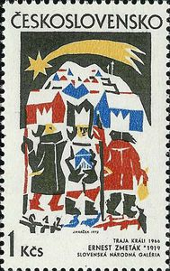

|  | Trojkráľová konferencia 2023Stretnutie (duchom) mladých slovenských a českých fyzikov |
Zámerom konferencie je neformálne stretnutie (duchom) mladých slovenských, českých a spriatelených fyzikov, ktorí pôsobia na inštitúciách doma a vo svete. V rámci programu prebehne i panelová diskusia na tému: Má ešte fyzik nejakú výhodu na trhu práce? Počas kávových prestávok bude možná prezentácia posterov. Konferencia sa uskutoční vo štvrtok 5. januára na Prírodovedeckej fakulte UPJŠ v Košiciach (Jesenná 5).
10:30 - 10:50 Prestávka
11:50 - 13:30 Obed
15:00 - 15:20 Prestávka
16:20 - 16:40 Prestávka
Prednášky budú prebiehať v Študovni sv. Angely Merici v budove Park Angelinum 9, kde sídli Ústav fyzikálnych vied, PF UPJŠ v Košiciach. Prístup do budovy je z adresy Jesenná 5, ktorá je zo železničnej alebo autobusovej stanice vzdialená chôdzou približne 20 až 25 minút. Ak chcete využiť verejnú dopravu zo zastávky `Staničné námestie', odporúčame autobusovú linku 19 (zastávka `Zimná', 2 minúty chôdzou od miesta konferencie) alebo električkovú linku 2, prípadne autobusovú linku 17 (výstup na zastávke `Radnica Starého mesta', 5 minút chôdze od miesta konferencie).
Ubytovanie si účastníci konferencie zabezpečujú individuálne. V blízkosti miesta konania konferencie - Ústavu fyzikálnych vied, PF UPJŠ, Jesenná 5, 04001 Košice - sa nachádzajú nasledujúce hotely a študentské domovy, ktoré poskytujú ubytovanie hotelového typu:
Jaroslav Bielčik (FJFI ČVUT Praha), Marek Bombara (UPJŠ Košice, kontakt: marek.bombara@upjs.sk), Milan Orlita (LNCMI, Grenoble a FÚ UK, Praha), Daniel Reitzner (VTT, Finland), Lukáš Slodička (UP Olomouc), Juraj Tekel (FMFI UK, Bratislava), Boris Tomášik (UMB Banská Bystrica a FJFI ČVUT Praha), Karel Výborný (FZÚ AV ČR Praha), Mário Ziman (FÚ SAV Bratislava)
Konferencia prebieha s podporou Prírodovedeckej fakulty Univerzity Pavla Jozefa Šafárika v Košiciach, Slovenskej fyzikálnej spoločnosti, Jednoty českých matematiků a fyziků a Československého časopisu pro fyziku.